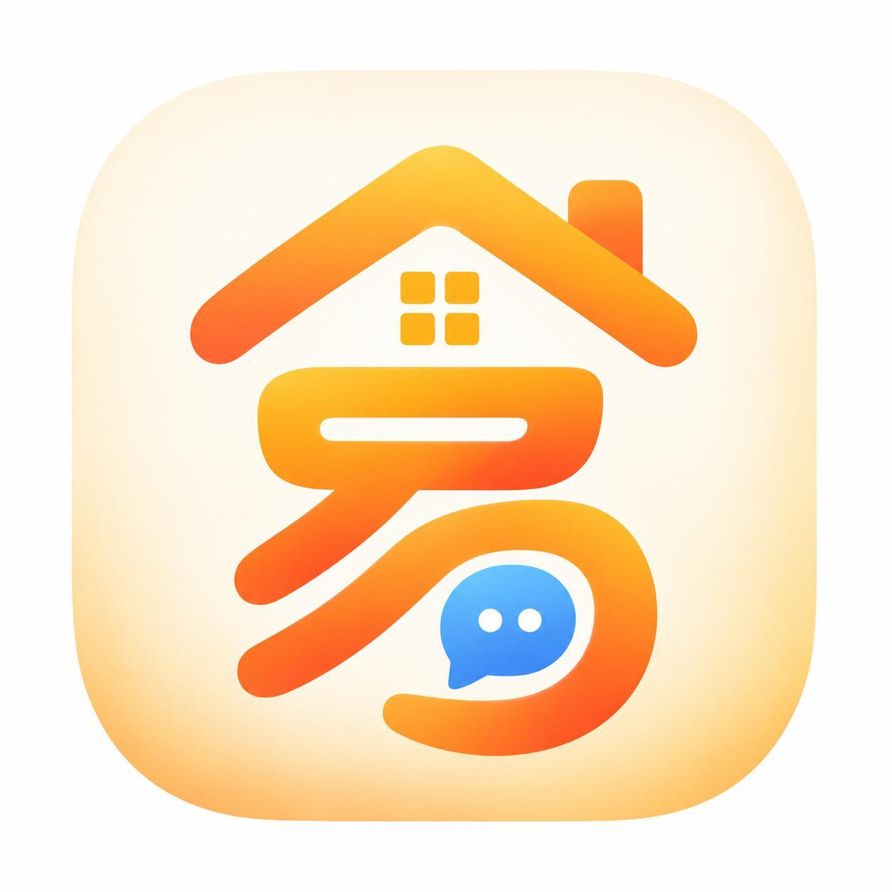

一句话，即刻开始
文字、图片、文件与表情。
用你喜欢的方式，分享每一个日常。

易家佳好，周末见！
周末一起去看海吧 🌊
今天的照片已送达
MADE FOR CONNECTION
少一些切换，多一些专注。
让日常的交流，回到简单自然。
文字、图片、文件与表情。
用你喜欢的方式，分享每一个日常。
家人的牵挂，朋友的分享。
群聊、消息引用，让讨论顺畅继续。
出门用手机，桌面上保持专注。
Android、Windows 和网页，随你选择。
YOURS, WHEREVER YOU ARE
选一个你熟悉的屏幕，
下一段对话，就从这里开始。
轻量体验，把问候带到身边。
预览版准备中 正在准备可下载版本允许通知后，支持普通后台聊天提醒。大一点的屏幕，聊聊生活里的小事。
安装包准备中 正在准备可下载版本美好的相遇，值得多等一会儿。
开放后将在这里更新A LITTLE HELP
点击「下载 APK」，下载完成后在手机上打开文件。如果系统要求授权，请仅为本次使用的浏览器或文件管理器开启安装权限，安装后可以关闭该权限。
允许系统通知后，应用切到后台且消息连接仍在线时，可接收私聊和群聊提醒。进程被清理、应用被强制停止或系统深度省电时不保证提醒，尚不支持离线云推送。附件下载、直接拍照、录音及语音和视频通话仍在适配测试中，暂不保证可用。
下载 EXE 安装包，在 64 位 Windows 电脑上打开并跟随安装向导。下载区会列出版本号和文件大小。当前版本未使用商业代码签名，Windows 可能显示发布者未验证提示；请核对下载来源和安装包信息。
iOS 暂未开放，具体时间尚未确定。开放后，本页将更新官方下载入口。现在可以先使用网页版。
不需要。点击「打开网页版」即可在浏览器中访问聊天应用，登录后使用。网页版的具体可用功能以当前客户端为准。